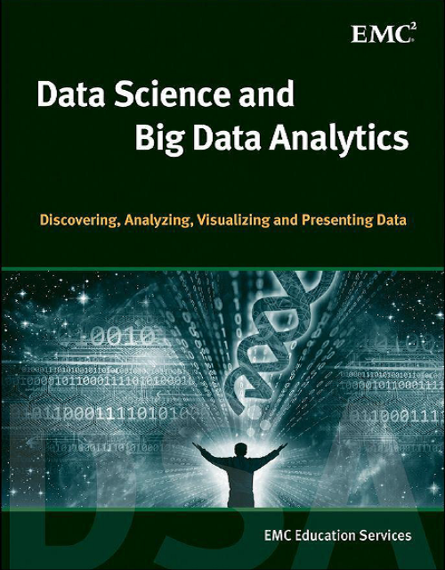

Mathematical Models of Financial Derivatives - Second Edition
Copyright © Springer Berlin Heidelberg 2008. All rights reserved.
Numerical Solution of Stochastic Differential Equations with Jumps in Finance
Copyright © Springer-Verlag Berlin Heidelberg 2010. All rights reserved.
Expert Systems in Finance
Copyright © Routledge 2010. All rights reserved.

Data Science & Big Data Analytics
Copyright © 2015 by John Wiley & Sons, Inc., Indianapolis, Indiana. All rights reserved.
Machine Learning Applications Using Python: Cases Studies from Healthcare,
Retail, and Finance
Copyright © 2019 by Puneet Mathur. All rights reserved.